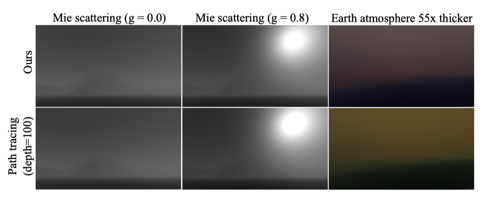
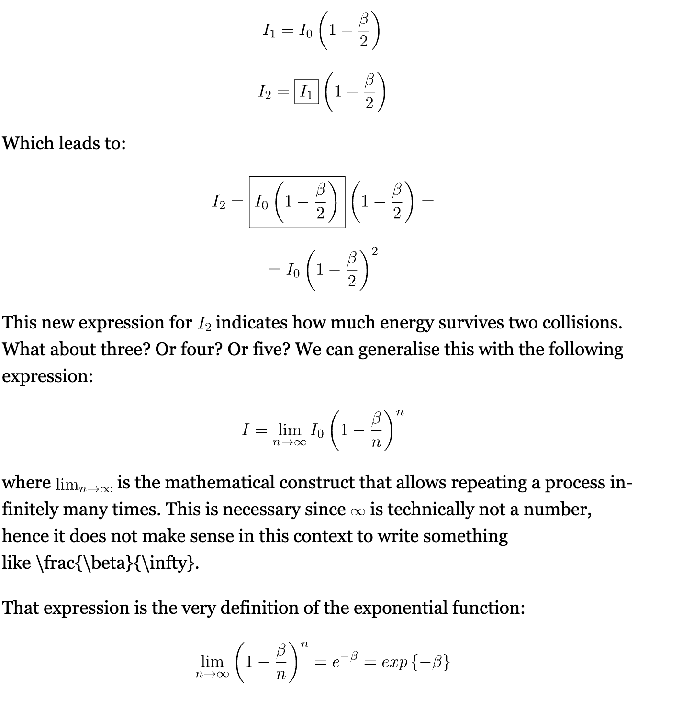
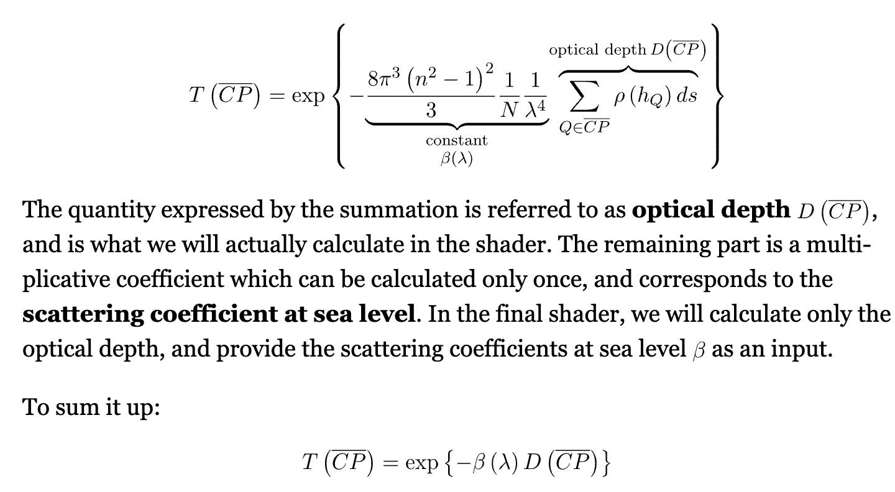
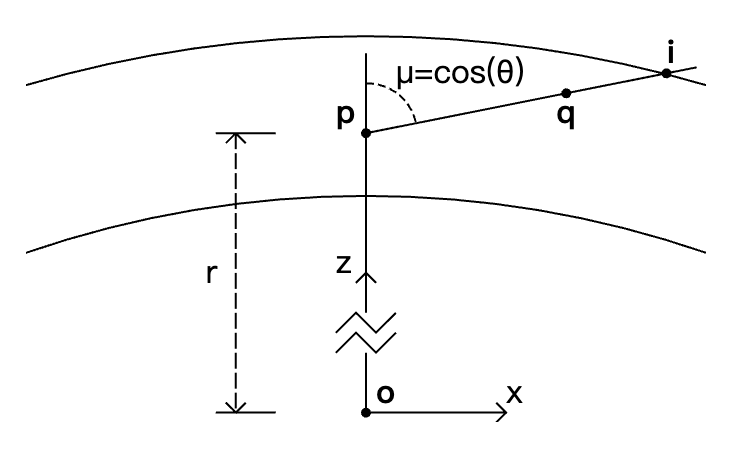
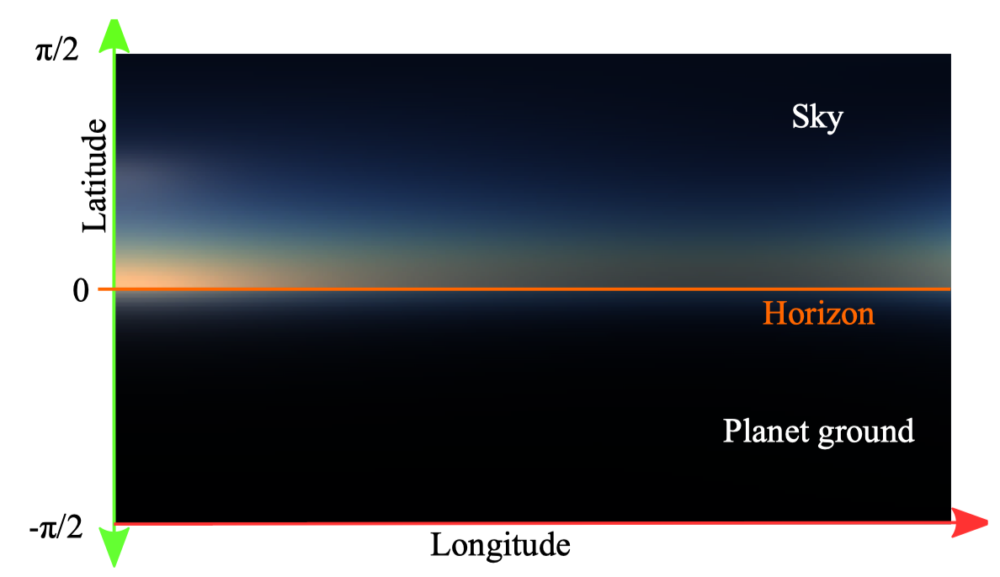
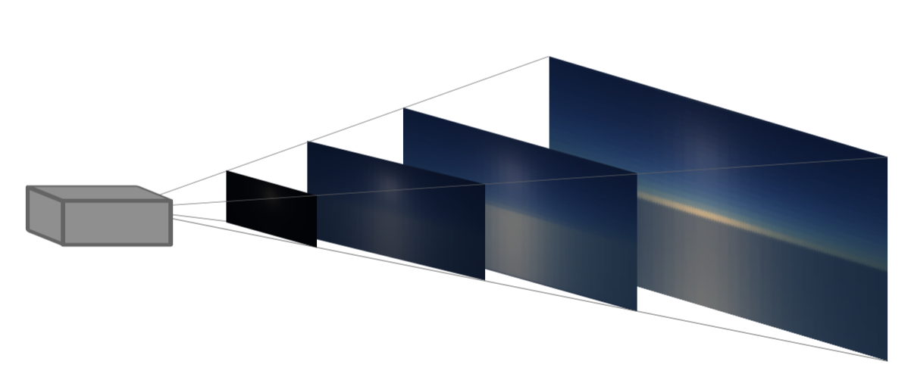
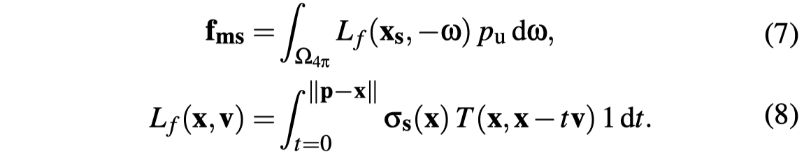
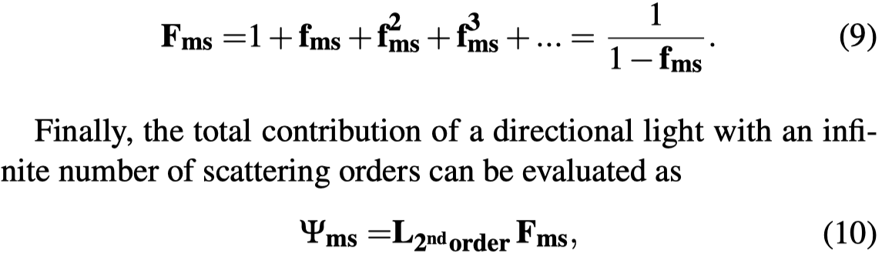
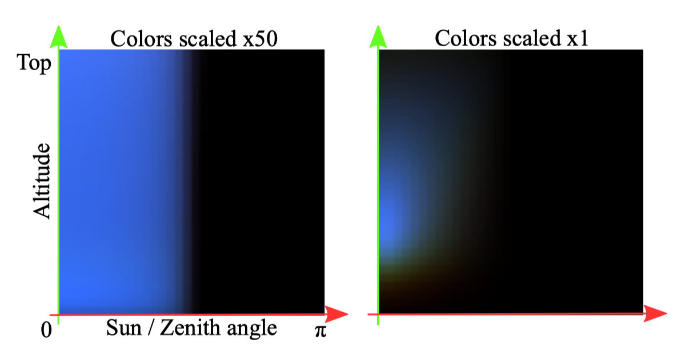

A Scalable and Production Ready Sky and Atmosphere Rendering Technique
- contributions
- artifacts
- leave over
- transmittance LUT
- sky-view LUT
- aerial-perspective LUT
- multi-scattering LUT
contributions
- propose a sky and aerial perspective rendering technique re-lying on LUTs to evaluate expensive parts of the lighting integralat lower resolution while maintaining important visual features.
- propose a novel way to evaluate the contribution of light mul-tiple scattering in the atmosphere. It can approximate an infinitenumber of scattering orders and can also be used to acceleratepath tracing.
- supportsdynamic time of dayalong with dynamicupdates of the atmospheric properties, all while rendering efficiently on a wide range of devices, from a low-end Apple iPhone6s to consoles and high-end gaming PCs
artifacts
- when using very high scattering coefficients, the hue can be lost or even start to drift as compared to the ground truth.
- we assume that the light scattering direction is isotropic right after the second bounce. This is in fact an approximation, which is confirmed by a comparison between our model and the reference path tracer. For Mie scattering only, with g = 0.0 and g = 0.8, RMSE is 0.0058 and 0.039, respectively. 
leave over
- 之前的LUT的一个问题就是，有volumetric shadowing due to hills and mountains的时候会有些artifacts. epipolar lines [Yus13], shadow volumes [Bru17b], or a variant of shadow volumes extruding meshes from shadow maps [Hoo16]
- 云和大气包括体积雾都是涉及到volume rendering
- ozone 的 density 高度分布也是有特定的分布的，这个需要再看下
transmittance LUT
transmittance

注意$\beta$的定义， represent the ratio of light that is lost by interactions with a particle.

LUT
任何一点以任一角度到大气边界的transmittance，可以最终转换成以r, $cos(\theta)$为变量的函数表示 
Length ComputeOpticalLengthToTopAtmosphereBoundary(
IN(AtmosphereParameters) atmosphere, IN(DensityProfile) profile,
Length r, Number mu) {
assert(r >= atmosphere.bottom_radius && r <= atmosphere.top_radius);
assert(mu >= -1.0 && mu <= 1.0);
// Number of intervals for the numerical integration.
const int SAMPLE_COUNT = 500;
// The integration step, i.e. the length of each integration interval.
Length dx =
DistanceToTopAtmosphereBoundary(atmosphere, r, mu) / Number(SAMPLE_COUNT);
// Integration loop.
Length result = 0.0 * m;
for (int i = 0; i <= SAMPLE_COUNT; ++i) {
Length d_i = Number(i) * dx;
// Distance between the current sample point and the planet center.
Length r_i = sqrt(d_i * d_i + 2.0 * r * mu * d_i + r * r);
// Number density at the current sample point (divided by the number density
// at the bottom of the atmosphere, yielding a dimensionless number).
Number y_i = GetProfileDensity(profile, r_i - atmosphere.bottom_radius);
// Sample weight (from the trapezoidal rule).
Number weight_i = i == 0 || i == SAMPLE_COUNT ? 0.5 : 1.0;
result += y_i * weight_i * dx;
}
return result;
}
DimensionlessSpectrum ComputeTransmittanceToTopAtmosphereBoundary(
IN(AtmosphereParameters) atmosphere, Length r, Number mu) {
assert(r >= atmosphere.bottom_radius && r <= atmosphere.top_radius);
assert(mu >= -1.0 && mu <= 1.0);
return exp(-(
atmosphere.rayleigh_scattering *
ComputeOpticalLengthToTopAtmosphereBoundary(
atmosphere, atmosphere.rayleigh_density, r, mu) +
atmosphere.mie_extinction *
ComputeOpticalLengthToTopAtmosphereBoundary(
atmosphere, atmosphere.mie_density, r, mu) +
atmosphere.absorption_extinction *
ComputeOpticalLengthToTopAtmosphereBoundary(
atmosphere, atmosphere.absorption_density, r, mu)));
}
从camera到任意距离的transmittance, 除法关系
DimensionlessSpectrum GetTransmittance(
IN(AtmosphereParameters) atmosphere,
IN(TransmittanceTexture) transmittance_texture,
Length r, Number mu, Length d, bool ray_r_mu_intersects_ground) {
assert(r >= atmosphere.bottom_radius && r <= atmosphere.top_radius);
assert(mu >= -1.0 && mu <= 1.0);
assert(d >= 0.0 * m);
Length r_d = ClampRadius(atmosphere, sqrt(d * d + 2.0 * r * mu * d + r * r));
Number mu_d = ClampCosine((r * mu + d) / r_d);
if (ray_r_mu_intersects_ground) {
return min(
GetTransmittanceToTopAtmosphereBoundary(
atmosphere, transmittance_texture, r_d, -mu_d) /
GetTransmittanceToTopAtmosphereBoundary(
atmosphere, transmittance_texture, r, -mu),
DimensionlessSpectrum(1.0));
} else {
return min(
GetTransmittanceToTopAtmosphereBoundary(
atmosphere, transmittance_texture, r, mu) /
GetTransmittanceToTopAtmosphereBoundary(
atmosphere, transmittance_texture, r_d, mu_d),
DimensionlessSpectrum(1.0));
}
}
sky-view LUT
resolution: 192 * 108
u v 含义 其实是建立了以 天顶方向为z轴， 太阳在垂直于天顶方向的平面的向量为x轴的坐标系。 不管观察位置怎么变，根据viewZenithCosAngle和ZenithHorizonAngle进行归一化，始终在sky-view LUT的上半平面或者下半平面采样。 这样到了外太空需要每帧ray-marching计算。 
void SkyViewLutParamsToUv(AtmosphereParameters Atmosphere, in bool IntersectGround, in float viewZenithCosAngle, in float lightViewCosAngle, in float viewHeight, out float2 uv) { float Vhorizon = sqrt(viewHeight * viewHeight - Atmosphere.BottomRadius * Atmosphere.BottomRadius); float CosBeta = Vhorizon / viewHeight; // GroundToHorizonCos float Beta = acos(CosBeta); float ZenithHorizonAngle = PI - Beta; if (!IntersectGround) { float coord = acos(viewZenithCosAngle) / ZenithHorizonAngle; coord = 1.0 - coord; #if NONLINEARSKYVIEWLUT coord = sqrt(coord); // more samples near horizon #endif coord = 1.0 - coord; // dx uv (0, 0) left top uv.y = coord * 0.5f; } else { float coord = (acos(viewZenithCosAngle) - ZenithHorizonAngle) / Beta; #if NONLINEARSKYVIEWLUT coord = sqrt(coord); #endif uv.y = coord * 0.5f + 0.5f; } { float coord = -lightViewCosAngle * 0.5f + 0.5f; // left and right is symmetrical coord = sqrt(coord); uv.x = coord; } // Constrain uvs to valid sub texel range (avoid zenith derivative issue making LUT usage visible) uv = float2(fromUnitToSubUvs(uv.x, 192.0f), fromUnitToSubUvs(uv.y, 108.0f)); }aerial-perspective LUT
- 3d texture resolution 32 32 32, 32depth = 32 km
- In-scattering is stored in the RGB channels while the transmittance is stored in the A channel, as the mean of the wavelength dependent RGB transmittance.
- 绘制LUT的时候，camera的位置为(0, 0, 0), 感觉之后即使位置变了，也是根据这个粗略算的（FASTAERIALPERSPECTIVE_ENABLED）。或者就是每帧都重新算。 
multi-scattering LUT
- 含义 应该希望得到视线方向的积分路径上任意某一点的高阶散射luminance, 在该点会进行最后一次散射(散射后光的传播方向会变成视线方向的反方向)。
- 2d texture resolution 32 * 32
- u v 含义 u是阳光反方向的天顶角cos值，v值是离地球半径高度的归一化值。
- assumptions
- 2阶及2阶以上的multi-scattering在计算时假设是各向同性的，相位函数是一个常量(1 / 4pi)
- 计算大于2阶的散射时，所有路径上点收到的2阶散射光illuminance是相等的
- 忽略可见性
  
float3 GetMultipleScattering(AtmosphereParameters Atmosphere, float3 scattering, float3 extinction, float3 worlPos, float viewZenithCosAngle)
{
float2 uv = saturate(float2(viewZenithCosAngle*0.5f + 0.5f, (length(worlPos) - Atmosphere.BottomRadius) / (Atmosphere.TopRadius - Atmosphere.BottomRadius)));
uv = float2(fromUnitToSubUvs(uv.x, MultiScatteringLUTRes), fromUnitToSubUvs(uv.y, MultiScatteringLUTRes));
float3 multiScatteredLuminance = MultiScatTexture.SampleLevel(samplerLinearClamp, uv, 0).rgb;
return multiScatteredLuminance;
}
把texture的u和v分成8*8个线程组进行计算。
auto DispatchCS = [&](UINT w, UINT h)
{
uint32 DispatchSizeX = w;// divRoundUp(w, 8);
uint32 DispatchSizeY = h;// divRoundUp(h, 8);
uint32 DispatchSizeZ = 1;
context->Dispatch(DispatchSizeX, DispatchSizeY, DispatchSizeZ);
};
这里是对某一个高度和太阳天顶角，用compute shader把积分的方向4pi分成了64个采样方向进行求和。 各个方向的2阶散射illuminance存在MultiScatAs1SharedMem.
numthreads(1, 1, 64)]
void NewMultiScattCS(uint3 ThreadId : SV_DispatchThreadID)
{
float2 pixPos = float2(ThreadId.xy) + 0.5f;
float2 uv = pixPos / MultiScatteringLUTRes;
uv = float2(fromSubUvsToUnit(uv.x, MultiScatteringLUTRes), fromSubUvsToUnit(uv.y, MultiScatteringLUTRes));
AtmosphereParameters Atmosphere = GetAtmosphereParameters();
float cosSunZenithAngle = uv.x * 2.0 - 1.0;
float3 sunDir = float3(0.0, sqrt(saturate(1.0 - cosSunZenithAngle * cosSunZenithAngle)), cosSunZenithAngle);
// We adjust again viewHeight according to PLANET_RADIUS_OFFSET to be in a valid range.
float viewHeight = Atmosphere.BottomRadius + saturate(uv.y + PLANET_RADIUS_OFFSET) * (Atmosphere.TopRadius - Atmosphere.BottomRadius - PLANET_RADIUS_OFFSET);
float3 WorldPos = float3(0.0f, 0.0f, viewHeight);
float3 WorldDir = float3(0.0f, 0.0f, 1.0f);
const bool ground = true;
const float SampleCountIni = 20;// a minimum set of step is required for accuracy unfortunately
const float DepthBufferValue = -1.0;
const bool VariableSampleCount = false;
const bool MieRayPhase = false;
const float SphereSolidAngle = 4.0 * PI;
const float IsotropicPhase = 1.0 / SphereSolidAngle;
// 八进制来组合theta和phi的index，一位用来做theta的index，一位用来做phi的index
// Reference. Since there are many sample, it requires MULTI_SCATTERING_POWER_SERIE to be true for accuracy and to avoid divergences (see declaration for explanations)
#define SQRTSAMPLECOUNT 8
const float sqrtSample = float(SQRTSAMPLECOUNT);
float i = 0.5f + float(ThreadId.z / SQRTSAMPLECOUNT); // 加上0.5/8的角度偏移
float j = 0.5f + float(ThreadId.z - float((ThreadId.z / SQRTSAMPLECOUNT)*SQRTSAMPLECOUNT));
{
float randA = i / sqrtSample;
float randB = j / sqrtSample;
float theta = 2.0f * PI * randA;
float phi = PI * randB;
float cosPhi = cos(phi);
float sinPhi = sin(phi);
float cosTheta = cos(theta);
float sinTheta = sin(theta);
WorldDir.x = cosTheta * sinPhi;
WorldDir.y = sinTheta * sinPhi;
WorldDir.z = cosPhi;
SingleScatteringResult result = IntegrateScatteredLuminance(pixPos, WorldPos, WorldDir, sunDir, Atmosphere, ground, SampleCountIni, DepthBufferValue, VariableSampleCount, MieRayPhase);
MultiScatAs1SharedMem[ThreadId.z] = result.MultiScatAs1 * SphereSolidAngle / (sqrtSample * sqrtSample);
LSharedMem[ThreadId.z] = result.L * SphereSolidAngle / (sqrtSample * sqrtSample);
}
#undef SQRTSAMPLECOUNT
// 这里是在把这些值通过二分法累加到第0个元素上
GroupMemoryBarrierWithGroupSync();
// 64 to 32
if (ThreadId.z < 32)
{
MultiScatAs1SharedMem[ThreadId.z] += MultiScatAs1SharedMem[ThreadId.z + 32];
LSharedMem[ThreadId.z] += LSharedMem[ThreadId.z + 32];
}
GroupMemoryBarrierWithGroupSync();
// 32 to 16
if (ThreadId.z < 16)
{
MultiScatAs1SharedMem[ThreadId.z] += MultiScatAs1SharedMem[ThreadId.z + 16];
LSharedMem[ThreadId.z] += LSharedMem[ThreadId.z + 16];
}
GroupMemoryBarrierWithGroupSync();
// 16 to 8 (16 is thread group min hardware size with intel, no sync required from there)
if (ThreadId.z < 8)
{
MultiScatAs1SharedMem[ThreadId.z] += MultiScatAs1SharedMem[ThreadId.z + 8];
LSharedMem[ThreadId.z] += LSharedMem[ThreadId.z + 8];
}
GroupMemoryBarrierWithGroupSync();
if (ThreadId.z < 4)
{
MultiScatAs1SharedMem[ThreadId.z] += MultiScatAs1SharedMem[ThreadId.z + 4];
LSharedMem[ThreadId.z] += LSharedMem[ThreadId.z + 4];
}
GroupMemoryBarrierWithGroupSync();
if (ThreadId.z < 2)
{
MultiScatAs1SharedMem[ThreadId.z] += MultiScatAs1SharedMem[ThreadId.z + 2];
LSharedMem[ThreadId.z] += LSharedMem[ThreadId.z + 2];
}
GroupMemoryBarrierWithGroupSync();
if (ThreadId.z < 1)
{
MultiScatAs1SharedMem[ThreadId.z] += MultiScatAs1SharedMem[ThreadId.z + 1];
LSharedMem[ThreadId.z] += LSharedMem[ThreadId.z + 1];
}
GroupMemoryBarrierWithGroupSync();
// 只有计算到第0个值，即累加已经完成了，才会去更新到texture里
if (ThreadId.z > 0)
return;
float3 MultiScatAs1 = MultiScatAs1SharedMem[0] * IsotropicPhase; // Equation 7 f_ms
float3 InScatteredLuminance = LSharedMem[0] * IsotropicPhase; // Equation 5 L_2ndOrder
// MultiScatAs1 represents the amount of luminance scattered as if the integral of scattered luminance over the sphere would be 1.
// - 1st order of scattering: one can ray-march a straight path as usual over the sphere. That is InScatteredLuminance.
// - 2nd order of scattering: the inscattered luminance is InScatteredLuminance at each of samples of fist order integration. Assuming a uniform phase function that is represented by MultiScatAs1,
// - 3nd order of scattering: the inscattered luminance is (InScatteredLuminance * MultiScatAs1 * MultiScatAs1)
// - etc.
#if MULTI_SCATTERING_POWER_SERIE==0
float3 MultiScatAs1SQR = MultiScatAs1 * MultiScatAs1;
float3 L = InScatteredLuminance * (1.0 + MultiScatAs1 + MultiScatAs1SQR + MultiScatAs1 * MultiScatAs1SQR + MultiScatAs1SQR * MultiScatAs1SQR);
#else
// For a serie, sum_{n=0}^{n=+inf} = 1 + r + r^2 + r^3 + ... + r^n = 1 / (1.0 - r), see https://en.wikipedia.org/wiki/Geometric_series
// 这里用了论文里拖到的简化公式来计算的
const float3 r = MultiScatAs1;
const float3 SumOfAllMultiScatteringEventsContribution = 1.0f / (1.0 - r);
float3 L = InScatteredLuminance * SumOfAllMultiScatteringEventsContribution;// Equation 10 Psi_ms
#endif
OutputTexture[ThreadId.xy] = float4(MultipleScatteringFactor * L, 1.0f);
}